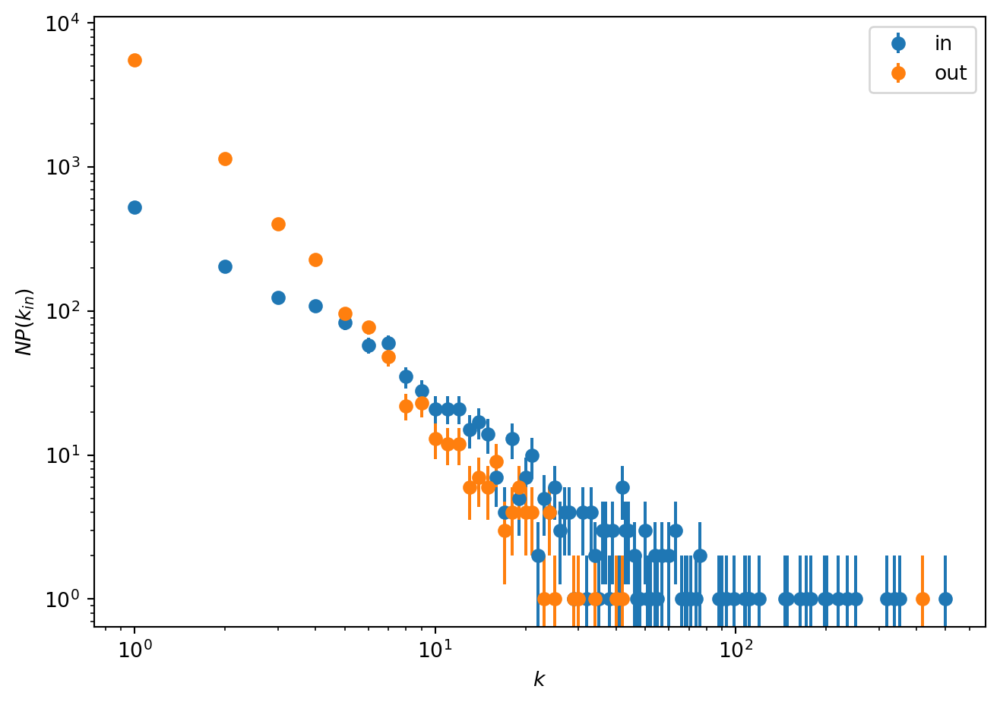

First, let’s define some helper functions to be used later.
Code
import jsonimport reimport numpy as npimport pandas as pdimport matplotlib.pyplot as pltdef plot_bar(x, y, title=None, xtick=None, rotation=0, xlabel=None, ylabel=None, width=0.8, horizontal=False):if horizontal: plt.barh(y=x, width=y, height=width) xlabel, ylabel = ylabel, xlabel plt.gca().invert_yaxis()else: plt.bar(x=x, height=y, width=width) plt.xticks(xtick, rotation=rotation) plt.xlabel(xlabel) plt.ylabel(ylabel) plt.title(title)def extract_missing_usernames(df, username_column): pattern =r"RT @([A-Za-z0-9_]+):" usernames = []for index, row in df.iterrows(): match = re.search(pattern, row["retweet_text"])if match: usernames.append(match.group(1))else: usernames.append(row[username_column]) df[username_column] = usernamesreturn dfdef get_time_range(df):"""Get the time range of the DataFrame Parameters ---------- df : pandas.DataFrame DataFrame to be queried date_lang : str, optional Language of the date, by default "de_DE" Returns ------- str Start date of the DataFrame str End date of the DataFrame """ df.retweet_created_at = df.retweet_created_at.astype("datetime64[ns, UTC]") start_date = df.retweet_created_at.min().strftime("%B %e, %Y") end_date = df.retweet_created_at.max().strftime("%B %e, %Y")return start_date, end_datedef get_largest_values(df, col_name, n):"""Get the n largest values of a column in a DataFrame Parameters ---------- df : pandas.DataFrame DataFrame to be queried col_name : str Name of the column to be queried n : int Number of largest values to be returned (i.e. number of rows) Returns ------- pandas.DataFrame DataFrame with the n largest values of the column """ top = df.sort_values(col_name, ascending=False).head(n)# put col_name as first column cols = top.columns.tolist() cols = cols[-1:] + cols[:-1] top = top[cols]return topdef get_top_users(df, df_authors, column_name, n):"""Get the top n users with their profiles based on a column in a DataFrame Values of the column are standardized so that the largest value is 1.0 Parameters ---------- df : pandas.DataFrame DataFrame to be queried df_authors : pandas.DataFrame DataFrame with the usernames and names of authors column_name : str Name of the column to be queried n : int Number of largest values to be returned (i.e. number of rows) Returns ------- pandas.DataFrame DataFrame with the n largest values of the column """ column_name_std = column_name +" (normalised)" df[column_name_std] = df[column_name] /max(df[column_name]) df = get_largest_values(df, column_name, n) df = add_profile_url(df, "username") df = pd.merge(df, df_authors, on="username", how="left") df = df.round(5) df.index = np.arange(1, len(df) +1) df = df[[column_name, column_name_std, "username", "name", "profile_url"]]return dfdef get_authors_name(df):"""Get the usernames and names of retweet authors and tweet authors Parameters ---------- df : pandas.DataFrame DataFrame to be queried Returns ------- pandas.DataFrame DataFrame with the usernames and names of retweet authors and tweet authors """ retweet_authors = df[["retweet_author_username", "retweet_author_name"]].copy() retweet_authors.rename( columns={"retweet_author_username": "username", "retweet_author_name": "name"}, inplace=True, ) tweet_authors = df[["tweet_author_username", "tweet_author_name"]].copy() tweet_authors.rename( columns={"tweet_author_username": "username", "tweet_author_name": "name"}, inplace=True, ) authors = pd.concat([retweet_authors, tweet_authors]) authors = authors.drop_duplicates(subset=["username"], keep="last").reset_index( drop=True )return authorsdef add_profile_url(df, username_col): df["profile_url"] ="https://twitter.com/"+ df[username_col]return df
Now let’s prepare the dataset and print some relevant information about it.
Code
# load and clean datasetdf = pd.read_parquet("data/raw/all_tweets_lehrkraeftebildung.parquet")df.replace(["NaN", "nan", "None", ""], np.NaN, inplace=True)df = extract_missing_usernames(df, "tweet_author_username")# get information about the retweetsstart_date, end_date = get_time_range(df)search_words ="(Lehrkräftebildung OR Lehrerbildung OR Lehrkräfte OR Lehrkräftefortbildung OR Seiteneinstieg OR Quereinstieg OR Lehramt)"query_conds ="(is:retweet OR is:quote) lang:de"# drop retweets with missing usernamesold_df_len = df.shape[0]try: missing_usernames = df.tweet_author_username.isnull().value_counts()[True]exceptKeyError: missing_usernames =0df = df.dropna(subset=["tweet_author_username"])# Print info about datasetprint(f"Number of total retweets in this dataset: \n{old_df_len}")print(f"\nTime range of the retweets:\n{start_date} - {end_date}")print(f"\nKeywords* used to collect the retweets:\n{search_words}")print(f"\nQuery conditions used to collect the retweets:\n{query_conds}")print(f"\nNumber of retweets with missing usernames for the original tweeter: {missing_usernames}\nThese are being dropped from the analysis. New total of retweets: {len(df)}")
Number of total retweets in this dataset:
11027
Time range of the retweets:
February 23, 2023 - April 1, 2023
Keywords* used to collect the retweets:
(Lehrkräftebildung OR Lehrerbildung OR Lehrkräfte OR Lehrkräftefortbildung OR Seiteneinstieg OR Quereinstieg OR Lehramt)
Query conditions used to collect the retweets:
(is:retweet OR is:quote) lang:de
Number of retweets with missing usernames for the original tweeter: 199
These are being dropped from the analysis. New total of retweets: 10828
Now let’s prepare the graph.
Code
import graph_tool.allas gt# prepare dataset for graphdf_ = df.copy()df_["weight"] = df_.groupby(['retweet_author_username', 'tweet_author_username']).transform('size')# choose columns to keepcolumns = ['retweet_author_username','tweet_author_username',"weight", ]df_ = df_[columns].drop_duplicates(subset=['retweet_author_username', 'tweet_author_username'])# create list of edgesg_list = [(r, t, w, r, t) for r, t, w inzip(df_.retweet_author_username, df_.tweet_author_username, df_.weight)]# create graphgf = gt.Graph( g_list, hashed=True, eprops=[('weight', 'int'), ('retweeter', 'string'), ('tweeter', 'string')])gf.list_properties()
pos = gt.sfdp_layout(g, eweight=g.edge_properties["weight"])# create mapping from usernames to vertex idsid_usernames = {v: g.vp.ids[v] for v inrange(len(list(g.vp.ids)))}
Average in-degree: 1.7155809267965076
Average out-degree: 1.7155809267965076

Comment: why the same?? I’m doing something wrong here.
Weight distribution
Weights indicate how many links there are between two nodes. We can see that most nodes have a weight of 1, which means that they have only one link between them.
Code
hist, bins = gt.edge_hist(g, g.ep["weight"], bins=[0, 1], float_count=False)bins = bins[:-1]print("Number of edges with weight:")[print(f"{b}: {hist[b]}") for b inrange(1, len(bins))]plot_bar(x=bins, y=hist, title=None, xtick=None, rotation=90, xlabel=None, ylabel=None);
average_path_length_in = gt.vertex_average(g, "in")average_path_length_out = gt.vertex_average(g, "out")average_path_length_total = (gt.vertex_average(g, "total"))print(f"Average path length of the network (total): {average_path_length_total[0]} with std: {average_path_length_total[1]}")print(f"Average path length of the network (in): {average_path_length_in[0]} with std: {average_path_length_in[1]}")print(f"Average path length of the network (out): {average_path_length_out[0]} with std: {average_path_length_out[1]}")# plot# plt.bar(["in", "out", "total"], [average_path_length_in[0], average_path_length_out[0], average_path_length_total[0]])# plt.ylabel("Average path length")# plt.title("Average path length of the network")
Average path length of the network (total): 2.9509738079247816 with std: 0.1659641564735749
Average path length of the network (in): 1.4754869039623908 with std: 0.15507219510386128
Average path length of the network (out): 1.4754869039623908 with std: 0.05750973570288464
Comment: why are in and out the same? The network is directed, so the in and out path lengths should be different, no?
Shortest distance distribution
Plot the shortest-distance histogram for each vertex pair in the graph.
Degree centrality represents the number of connections a node has.
In-degree centrality
In-degree centrality represents the number of connections going into a node. In the case of retweets, in-degree centrality will indicate that a user is getting a large number of retweets.
Code
in_deg = g.get_in_degrees(g.get_vertices())dic = {b: in_deg[b] for b inrange(1, len(in_deg))}values_sum =sum(dic.values())dic = {key: val for key, val in (sorted(dic.items(), key=lambda x: x[1], reverse=True)[:20])}# map names to idsdic = {id_usernames[k]: v for k, v in dic.items()}# prepare tablescore_name ="In-Degrees"df_ = pd.DataFrame(dic.items(), columns=["Username", score_name])df_["(normalised)"] = (df_[score_name] / df_[score_name].max()).round(2)df_["(share)"] = ((df_[score_name] / values_sum)*100).round(2)df_.index = np.arange(1, len(df_) +1)print(df_)plot_bar(x=list(dic.keys()), y=dic.values(), horizontal=True, title=f"Top 20 users by {score_name}", xtick=None, rotation=90, xlabel="Username", ylabel="Count");;
Out-degree centrality represents the number of connections going out of a node. In the case of retweets, out-degree centrality will indicate that a user is retweeting a lot.
Code
out_deg = g.get_out_degrees(g.get_vertices())dic = {b: out_deg[b] for b inrange(1, len(out_deg))}values_sum =sum(dic.values())dic = {key: val for key, val in (sorted(dic.items(), key=lambda x: x[1], reverse=True)[:20])}# map names to idsdic = {id_usernames[k]: v for k, v in dic.items()}# prepare tablescore_name ="Out-Degrees"df_ = pd.DataFrame(dic.items(), columns=["Username", score_name])df_["(normalised)"] = (df_[score_name] / df_[score_name].max()).round(2)df_["(share)"] = ((df_[score_name] / values_sum)*100).round(2)df_.index = np.arange(1, len(df_) +1)plot_bar(x=list(dic.keys()), y=dic.values(), horizontal=True, title=f"Top 20 users by {score_name}", xtick=None, rotation=90, xlabel="Username", ylabel="Count");;print(df_)
Comment: seems like a bot is retweeting a lot more than any other user.
Betweenness centrality
Betweeness centrality represents the number of all ‘shortest paths’ between nodes that pass through a specific node. In other words, it counts how often that node is part of a short connection. In the case of retweets, it measures the extent to which a user connects different communities of users.
Useful when there is flux / information flow within network
Helps predict and locate vulnerability of a network (i.e. if you remove a node with high betweeness)
Problem: computationally expensive (as you need to calculate all shortest paths)
dic = {i: vp.a[i] for i inrange(g.num_vertices())}dic = {key: val for key, val in (sorted(dic.items(), key=lambda x: x[1], reverse=True)[:20])}# map names to idsdic = {id_usernames[k]: v for k, v in dic.items()}# prepare tablescore_name ="Betweenness Score"df_ = pd.DataFrame(dic.items(), columns=["Username", score_name])df_["(normalised)"] = (df_[score_name] / df_[score_name].max()).round(2)df_ = df_.round(5)df_.index = np.arange(1, len(df_) +1)print(df_)plot_bar(x=list(dic.keys()), y=dic.values(), horizontal=True, title=f"Top 20 users by {score_name}", xtick=None, rotation=90, xlabel="Username", ylabel="Count");
dic = {i: ep.a[i] for i inrange(g.num_edges())}dic = {key: val for key, val in (sorted(dic.items(), key=lambda x: x[1], reverse=True)[:20])}# get names of tweeters and retweeterslis = [(list(g.ep.tweeter)[k], list(g.ep.retweeter)[k], v) for k, v in dic.items()]# prepare tablescore_name ="Betweenness Score"df_ = pd.DataFrame(lis, columns=["Tweeter", "Retweeter", score_name])df_["(normalised)"] = (df_[score_name] / df_[score_name].max()).round(2)df_ = df_.round(5)df_.index = np.arange(1, len(df_) +1)print(df_)plot_bar(x=df_.index, y=df_[score_name], title=f"Top 20 edges by {score_name}", xtick=df_.index, rotation=90, xlabel="Edges", ylabel="Count");
Sum of all the eigenvector centralities of its neighbours. My importance is dependent on the importance of the nodes which I am connected to. It is recursive: so my centrality depends on the centrality of my neighbours, which depends on the centrality of their neighbours, and so on. Takes into account the whole network.
Katz: makes use of the adjacency matrix. Similar to eigenvector, but includes an alpha factor that gradually reduces the influence of further nodes. So the difference is that you can set (through alpha) how much influence local neighbours have in comparison to far away neighbours.
Code
import seaborn as snsalphas = [0.1, 0.01, 0.001]df_merged = pd.DataFrame()for i, alpha inenumerate(alphas): vp_name =f"katz_{alpha}" g.vertex_properties[vp_name] = g.new_vertex_property("double") gt.katz(g, alpha=alpha, beta=None, weight=g.ep["weight"], vprop=g.vp[vp_name], epsilon=1e-06, max_iter=None, norm=True) dic = {i: g.vp[vp_name][i] for i inrange(len(list(g.vp[vp_name])))}#dic = {key: val for key, val in (sorted(dic.items(), key=lambda x: x[1], reverse=True))} dic = {id_usernames[k]: v for k, v in dic.items()}# prepare table score_name =f"Katz Score (a={alpha})" df_ = pd.DataFrame(dic.items(), columns=["Username", score_name])#df_["(normalised)"] = (df_[score_name] / df_[score_name].max()).round(2) df_ = df_.round(5) df_.index = np.arange(1, len(df_) +1)if i ==0: df_merged = df_else:# df_ = df_[["Username", score_name]] df_merged = df_merged.merge(df_, on="Username", how="left", suffixes=("", f"_{alpha}"))df_top20 = df_merged.sort_values(by=df_merged.columns[1], ascending=False).head(20)print(df_top20)p = sns.catplot( data=df_top20.melt(id_vars='Username'), kind="bar", y="Username", x="value", hue="variable", legend_out=False, aspect=1.5)plt.title("Katz centrality for different alpha values");
Similar to eigenvector. For a random walker on a network, what is the expected probability of it being on that node, plus the probability that it jumps to somewhere completely different. The smaller the alpha, the more it jumps around. The higher the number that walker passes through a node, the higher the centrality of that node.
Adding some noise makse sure results does not point you to the same nodes every time.
Code
g.vertex_properties["pagerank"] = g.new_vertex_property("double")gt.pagerank(g, damping=0.85, pers=None, weight=g.ep["weight"], prop=g.vp["pagerank"], epsilon=1e-06, max_iter=None, ret_iter=False)dic = {i: g.vp["pagerank"][i] for i inrange(len(list(g.vp["pagerank"])))}dic = {key: val for key, val in (sorted(dic.items(), key=lambda x: x[1], reverse=True)[:20])}# map names to idsdic = {id_usernames[k]: v for k, v in dic.items()}# prepare tablescore_name ="Pagerank Score"df_ = pd.DataFrame(dic.items(), columns=["Username", score_name])df_["(normalised)"] = (df_[score_name] / df_[score_name].max()).round(2)df_ = df_.round(5)df_.index = np.arange(1, len(df_) +1)print(df_)plot_bar(x=dic.keys(), y=dic.values(), title=f"Top 20 users by {score_name}", xtick=None, rotation=90, xlabel="Username", ylabel="Count");
(<VertexPropertyMap object with value type 'vector<double>', for Graph 0x7f3aa735eec0, at 0x7f3aa2282e60>,
<GraphView object, directed, with 5966 vertices and 5965 edges, edges filtered by (<EdgePropertyMap object with value type 'bool', for Graph 0x7f3aa2283ca0, at 0x7f3b128118d0>, False), vertices filtered by (<VertexPropertyMap object with value type 'bool', for Graph 0x7f3aa2283ca0, at 0x7f3aa22807f0>, False), at 0x7f3aa2283ca0>,
<VertexPropertyMap object with value type 'vector<double>', for Graph 0x7f3aa2283ca0, at 0x7f3aa21ad960>)


COMMENTS / ISSUES